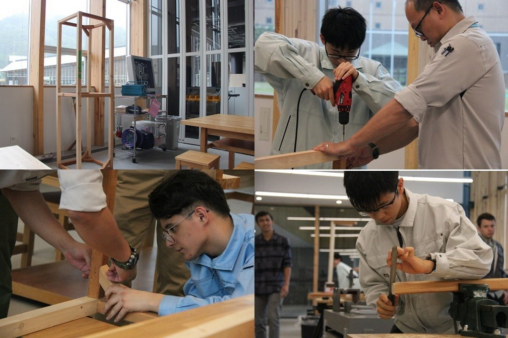
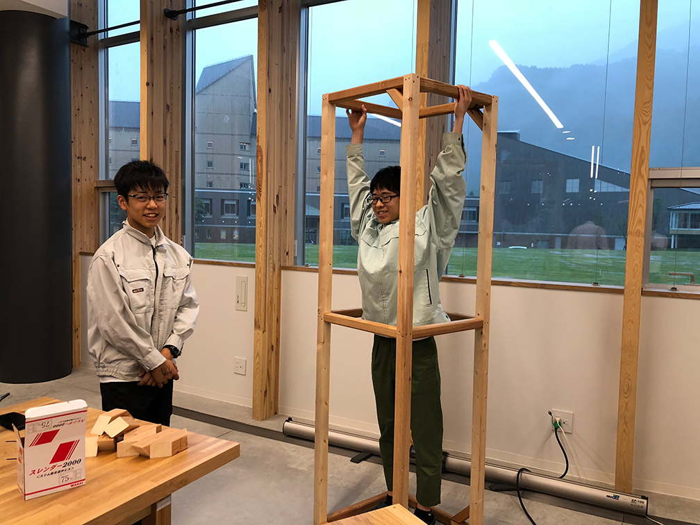
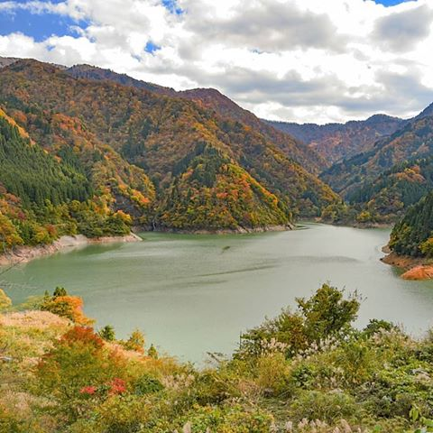

Welcome to the Portfolio website of REREREKUN

In this school we can enjoy in many axtivity, because ICT is in near the Nature.
So we can easy to joyin out side axtivity.
Also ICT have intrersting class. That class name is "Engineering design". In this
class we learn about the way to making products.
My favorite axtivity in ED

My favorite axtivity in ED is roject to improve school's bad place. In this axtivity our team try to improve laundry problem. That problem is "some people don't take out own laundry. So some people can't use laundry.
Then we think how to improve this problem. First time we think make some like "Carrying the laundry in the cylinder" but it's too difficult for us, because when we do that we need take hole in the wall. Then next we think the shelf.
We used this idea. First, I'm make the model of that shelf on PC. Then next we make with wood.
Out side axtivity

This school has many out side axtivity, because 白山麓campas is in nature. My most faivarit out side axtivity is swinning in 手取湖. It is nomal people can't swinning in 手取湖. So it was precious experience. In 手取湖 is a little warm.
We were swinning and rowed a boat.